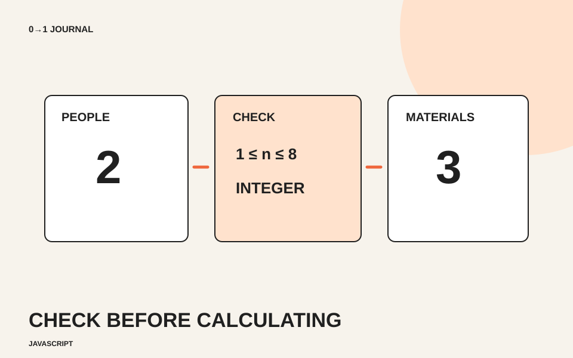

参加人数に「2」を入れて予備の材料を一つ足したら、「21」と表示された。JavaScriptでは、入力欄から受け取った値の種類が計算に影響します。今回は架空の工作会で、参加者一人に一組、さらに予備一組の材料を用意する見本を作ります。
人数は1人から8人までの整数とします。この人数や予備の数は模擬案件の条件で、実際のイベントの規定ではありません。申し込みや在庫確保は行わず、画面内で必要数を計算する練習です。
数字に見える文字と、数値を分ける
inputのvalueで得た値は文字列です。文字列の'2'に1を足すと、数値の加算ではなく文字の連結になり、'21'になります。見た目が数字だからといって、そのまま計算へ渡さないようにしましょう。
typeがnumberの入力欄なら、valueAsNumberで数値として読み取れます。MDNのvalueAsNumberの説明では、空欄など数値へ変換できない場合はNaNになることも確認できます。NaNは、有効な数値として扱えない結果を表す特別な値です。
「空欄は0人」と勝手に決めると、入力忘れなのに計算できたように見えます。今回は空欄を計算対象から外し、必要な入力を文章で案内する方針にします。
入力の条件を、欄のそばに書く
次のHTML断片を練習用ページのbodyへ置きます。minやmaxを指定するだけでなく、人が読める説明も残します。ボタンはJavaScriptの準備が終わってから有効になります。
<label for="people">参加人数</label>
<p id="people-help">1〜8人の整数を入力してください。</p>
<input id="people" type="number" min="1" max="8" step="1"
required aria-describedby="people-help">
<button id="calculate" type="button" disabled>材料数を計算する</button>
<p id="materials" role="status"></p>
この断片はformではなく、ページ内の計算用UIです。ボタンを押した際にブラウザーの送信時検証が自動で実行される前提にはせず、計算処理の中でも条件を確かめます。
計算より前に、整数と範囲を確かめる
次のコードを上の断片より後のscript要素内へ置きます。整数であること、1以上であること、8以下であることを確認してから足し算します。
const input = document.querySelector('#people');
const button = document.querySelector('#calculate');
const result = document.querySelector('#materials');
if (input && button && result) {
button.addEventListener('click', () => {
const people = input.valueAsNumber;
if (!Number.isInteger(people) || people < 1 || people > 8) {
result.textContent = '参加人数は1〜8人の整数で入力してください。';
return;
}
result.textContent = `材料は予備を含めて${people + 1}組です。`;
});
button.disabled = false;
} else {
console.error('材料数を計算する要素が見つかりません。');
}
Number.isInteger()は整数かを調べ、NaNも整数とは扱いません。 この判定はMDNのNumber.isIntegerの説明を参照できます。条件に合わない場合は案内を表示してreturnで処理を終えるため、その下の足し算へ進みません。前に正しい結果を出していても、不正な入力で再計算すれば古い結果は案内文に置き換わります。
画面側の検査は、計算例を分かりやすくするためのものです。実際の受付へ発展させる場合は、サーバー側でも条件を検証し、入力欄とエラーの関連付けなどを追加します。このコードをそのまま受付フォーム一式と考えないでください。
15分を目安に、境目と空欄を試す
1人なら2組、8人なら9組になると予想して試します。その後、空欄、0、9、1.5を順に試し、材料数ではなく案内が出ることを確認しましょう。2人で成功させた直後に欄を空にする操作も試し、古い結果が残らないかを見ます。
予想と実行結果を比べる記事のように、入力と期待する表示を先に書くと、確認し忘れを減らせます。フォーム全体のエラーの伝え方へ進む場合は、JavaScriptの無料レッスンで入力状態を整理してください。
記載内容へのご質問や訂正のご連絡は、hello@junkbranding.comまでお願いします。